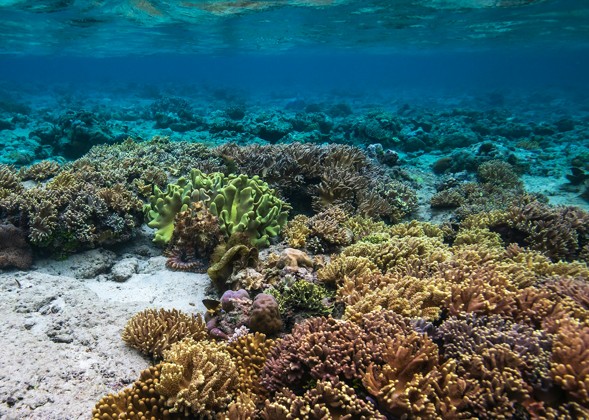

Indonesia Travel Guide
Raja Ampat

Transportation:
- Fly to Sorong, then take a speedboat to Waisai, the capital of Raja Ampat.
- Speedboat fare from Sorong to Waisai: around Rp 300,000 – Rp 400,000 per person.
Accommodation:
Local homestay or eco-resort (prices around Rp 500,000 – Rp 1,500,000 per night depending on accommodation class).
Activities:
- Snorkeling/Diving at Piaynemo – The most iconic spot in Raja Ampat.
- Visit Wayag Island – Spectacular karst scenery, but requires longer travel time.
- Birdwatching – See the bird of paradise in Raja Ampat’s forests.
- Beach Tour – Enjoy white sandy beaches and crystal clear waters.
Daily Budget:
Rp 1,500,000 – Rp 3,000,000 (including local transportation, meals, and snorkeling activities).
Bunaken Island
Transportation:
- Fly from Sorong to Manado.
- Take a boat to Bunaken Island (about 45 minutes).
Accommodation:
Resort or homestay in Bunaken (around Rp 400,000 – Rp 1,500,000 per night).
Activities:
- Diving at Bunaken Marine Park – One of the best diving spots in the world with incredible coral diversity.
- Snorkeling – If you don’t dive, snorkeling still offers beautiful underwater views.
- Beach Exploration – Enjoy the stunning beaches on this island.
Daily Budget:
Rp 1,000,000 – Rp 2,500,000 (including diving or snorkeling and local transportation).
Cenderawasih Bay National Park

Transportation:
- Fly from Banda Neira to Nabire (with a transit in Ambon or Jayapura).
- Take a boat to Cenderawasih Bay National Park.
Accommodation:
Homestays or simple accommodations (around Rp 300,000 – Rp 700,000 per night).
Activities:
- Snorkeling/Diving with whale sharks – The main attraction of this national park is swimming with whale sharks.
- Beach Exploration – Enjoy the natural beauty of untouched beaches and bays.
Daily Budget:
Rp 1,000,000 – Rp 2,000,000 (including transportation, meals, and snorkeling/diving activities).
Labuan Bajo

Transportation:
- Fly from Nabire to Labuan Bajo (usually with a transit in Makassar).
Accommodation:
Hotel or homestay in Labuan Bajo (Rp 400,000 – Rp 1,500,000 per night).
Activities:
- Visit Komodo Island – See the Komodo dragons in their natural habitat.
- Snorkeling or Diving at Komodo National Park – Snorkeling spots like Pink Beach and Manta Point are a must-visit.
- Trekking at Padar Island – Iconic views of beautiful hills and beaches.
Daily Budget:
Rp 1,500,000 – Rp 3,000,000 (including Komodo tours, snorkeling, and transportation).